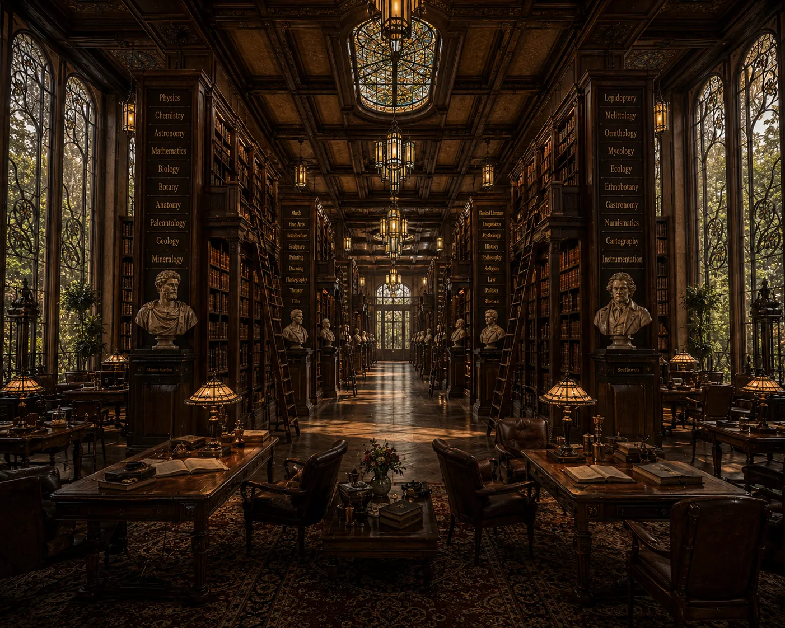

The SciencesAstronomy, and the physical sciences beside it The Naturalist’s ShelvesNatural History The ArtsFine Arts & Music The HumanitiesThe Ancient World The Long HallAll seventeen shelves The Reading DeskThe Reading Room: how to study The Front DeskWhat I’m reading now